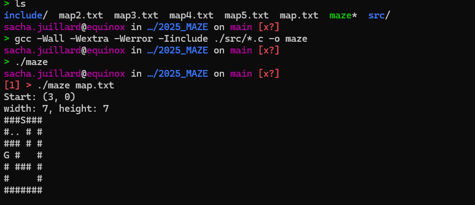

Description
Projet en C pour résoudre un labyrinthe en utilisant différents algorithmes, incluant la recherche en largeur (Breadth First Search) et l’optimisation des chemins.
Fonctionnalités
- Résolution automatique de labyrinthe
- Affichage du chemin trouvé
- Support de plusieurs algorithmes
- Interface terminal simple
Compétences développées
Algorithmes de recherche, manipulation de matrices en C, structuration modulaire et lecture/écriture de fichiers.